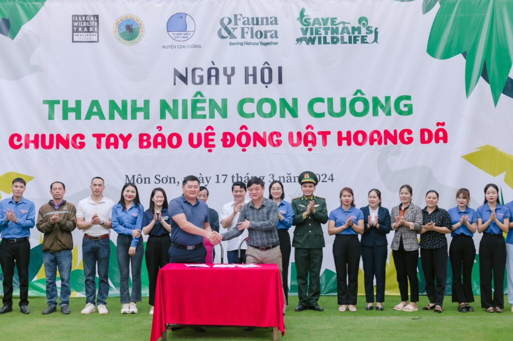
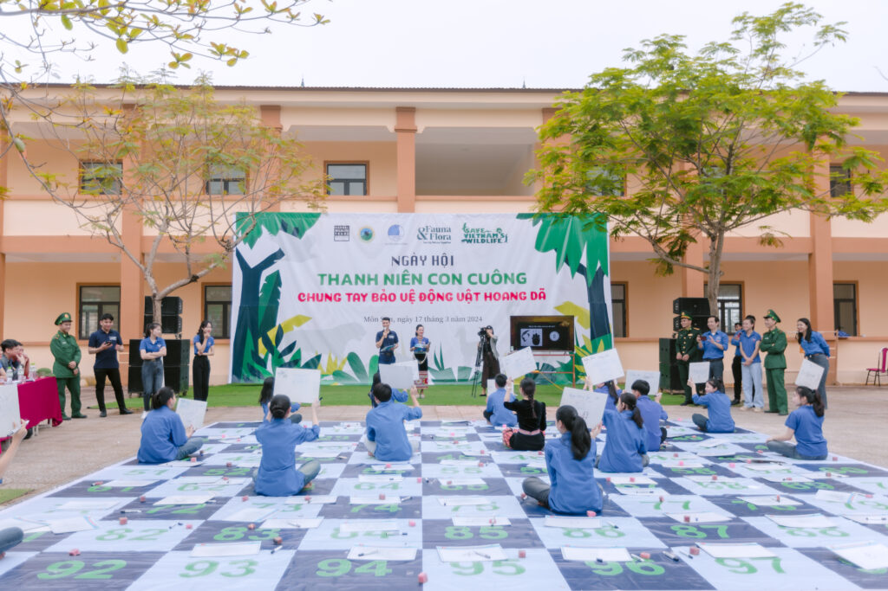
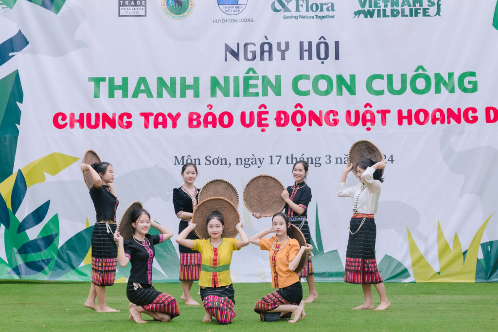

The Save Vietnam’s Wildlife (SVW) Center, organized by Fauna & Flora International, the Youth Union of Con Cuông District, and Pu Mat National Park, successfully held the "Con Cuông Youth Festival Joining Hands to Protect Wildlife." The festival attracted a large number of local residents and students.
Pu Mat National Park, the pride of Con Cuông, is classified as a Category A biological value, with a diverse range of flora and fauna species. However, the illegal use, trade, and exploitation of wildlife are major threats leading to the increased rate of extinction of many wild species, posing potential negative impacts on the environment and human health.
Therefore, the "Con Cuông Youth Festival Joining Hands to Protect Wildlife" was implemented to raise awareness and promote propaganda among Youth Union members, the public, especially the younger generation, to collectively act in conservation, restoration, and protection of biodiversity; share and spread the message of civilized consumption and environmentally friendly behavior, contributing to preventing the risk of extinction of wild species.
During the festival, many activities were implemented with enthusiastic support from partners and delegates, such as: Signing the commitment "Do not buy, sell, hunt, trap, capture, or keep wild animals and their products"; Mobile propaganda in villages; Organizing a golden bell ringing competition for students of Muong Qua High School; Sports exchanges. In addition, delegates also participated in puzzle games at the information booths. It is hoped that in the future, the Save Vietnam’s Wildlife (SVW) Center will have more opportunities for cooperation and collaboration to implement more activities on nature conservation and wildlife preservation, ensuring that the forests will continue to sing forever!"